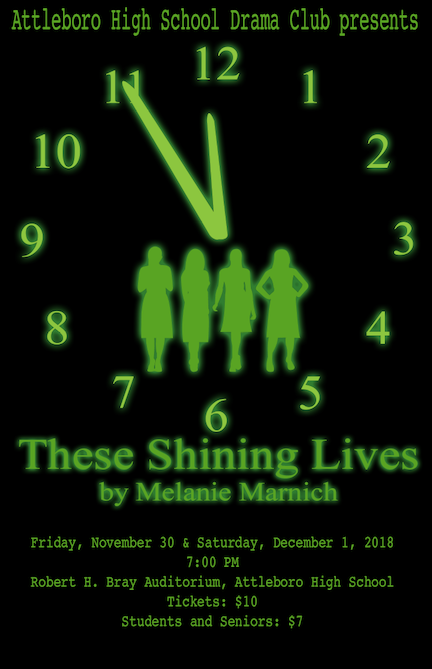

Drama Club Poster
Every year, my High School’s drama club
would reach out to the designers to make promotional art
for their shows, we were given a short summary of the show
and all the information the show times and dates.
This show in particular is about 4 “Radium Girls”,
who were women that worked at watch companies,
where they eventually contracted radium poisoning.
The paint they used glowed in the dark and once it
had gotten into their bodies, their skin began to glow in the dark
as well which is where I got the most inspiration for my design.
I made 4 silhouettes of women that are glowing, surrounding them
is a glowing clock face, the clock nearing midnight is
meant to signify their time running out. Another huge part of
the show is how much of a media frenzy this caused,
this inspired me to use a typeface similar to
typewriter newsprint to reflect this.
